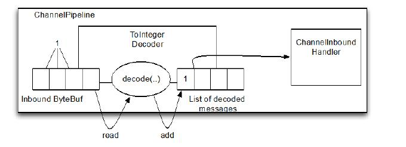
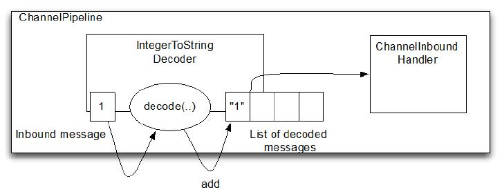
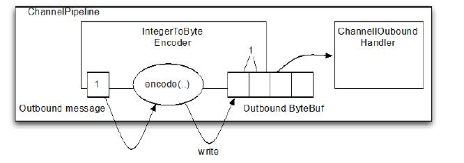
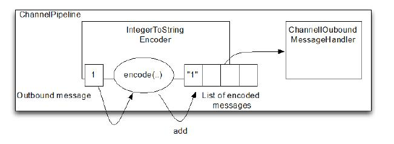

Codec 编码
Table of Contents
本章介绍：
- Decoder(解码器)
- Encoder(编码器)
- Codec(编解码器)
在前面的章节中，我们讨论了连接到拦截操作或数据处理链的不同方式，展示了如何使用 ChannelHandler 及其相关的类来实现几乎任何一种应用程序所需的逻辑。但正如标准架构模式通常有专门的框架，通用处理模式很适合使用目标实现，可以节省我们大量的开发时间和精力
在这一章，我们将研究编码和解码： 数据从一种特定协议格式到另一种格式的转换 。这种处理模式是由通常被称为 codecs 的组件来处理的。Netty提供了一些组件，利用它们可以很容易地为各种不同协议编写编解码器。例如，如果您正在构建一个基于 Netty 的邮件服务器，你可以使用POP3, IMAP 和 SMTP的现成的实现
Codec
编写一个网络应用程序需要实现某种 codec (编解码器)，codec的作用就是 将原始字节数据与目标程序数据格式进行互转 。网络中都是以字节码的数据形式来传输数据的，codec 由两部分组成：
- decoder: 解码器
- encoder: 编码器
编码器和解码器一个字节序列转换为另一个业务对象。一个 消息 是一个结构化的字节序列，语义为一个特定的应用程序的 数据 。encoder 是组件，转换消息格式适合传输(就像字节流)，而相应的 decoder 转换传输数据回到程序的消息格式。逻辑上, 从 消息转换来是当作操作 outbound（出站） 数据,而转换， 到 消息是处理 inbound（入站） 数据
Decoder
Netty 提供了丰富的解码器抽象基类，可以很容易的实现这些基类来自定义解码器。主要分两类：
- 解码字节到消息
- ByteToMessageDecoder
- ReplayingDecoder
- 解码消息到消息 +MessageToMessageDecoder
decoder 负责将 入站 数据从一种格式转换到另一种格式，Netty的解码器是一种 ChannelInboundHandler 的抽象实现。实践中使用解码器很简单，就是将入站数据转换格式后传递到 ChannelPipeline 中的下一个ChannelInboundHandler 进行处理
这样的处理是很灵活的，可以将解码器放在 ChannelPipeline 中，重用逻辑
ByteToMessageDecoder
ByteToMessageDecoder 是用于将字节转为消息（或其他字节序列）
不能确定远端是否会一次发送完一个完整的信息，因此这个类会缓存入站的数据，直到准备好了用于处理。表7.1说明了它的两个最重要的方法：
| 方法 | 描述 |
| decode | This is the only abstract method you need to implement. It is called with a ByteBuf having the incoming bytes and a List into which decoded messages are added. decode() is called repeatedly until the List is empty on return. The contents of the List are then passed to the next handler in the pipeline |
| decodeLast | The default implementation provided simply calls decode().This method is called once, when the Channel goes inactive. Override to provide special handling |
假设我们接收一个包含简单整数的字节流，每个都单独处理。在本例中，将从入站 ByteBuf 读取每个整数并将其传递给 pipeline 中的下一个ChannelInboundHandler。扩展ByteToMessageDecoder来实现解码字节流成整数，如图7.1所示：

每次从入站的 ByteBuf 读取四个字节，解码成整形，并添加到一个 List ，当不能再添加数据到 List 时，它所包含的内容就会被发送到下个 ChannelInboundHandler：
public class ToIntegerDecoder extends ByteToMessageDecoder { //1 实现继承了 ByteToMessageDecode 用于将字节解码为消息 @Override public void decode(ChannelHandlerContext ctx, ByteBuf in, List<Object> out) throws Exception { if (in.readableBytes() >= 4) { //2 检查可读的字节是否至少有4个 ( int 是4个字节长度) out.add(in.readInt()); //3 从入站 ByteBuf 读取 int ， 添加到解码消息的 List 中 } } }
尽管 ByteToMessageDecoder 简化了这个模式，你会发现它还是有点烦人。在实际的读操作(readInt)之前，必须要验证输入的 ByteBuf 要有足够的数据。在下一节中将看看 ReplayingDecoder，一个特殊的解码器
引用计数对于编码器和解码器来说，这个过程非常简单。一旦一个消息被编码或解码它自动被调用ReferenceCountUtil.release(message) 。如果你稍后还需要用到这个引用而不是马上释放，你可以调用 ReferenceCountUtil.retain(message) 。这将 增加引用计数防止消息被释放
ReplayingDecoder
ReplayingDecoder 是 byte-to-message 解码的一种特殊的抽象基类，读取缓冲区的数据之前需要检查缓冲区是否有足够的字节，使用ReplayingDecoder就无需自己检查：
- 若ByteBuf中有足够的字节，则会正常读取
- 若没有足够的字节则会停止解码
ByteToMessageDecoder VS ReplayingDecoder
ReplayingDecoder 继承自 ByteToMessageDecoder ，所以两者 API 是相同的。也正因为这样的包装使得 ReplayingDecoder 带有一定的局限性：
- 不是所有的标准 ByteBuf 操作都被支持，如果调用一个不支持的操作会抛出 UnreplayableOperationException
- ReplayingDecoder 略慢于 ByteToMessageDecoder
如果这些限制是可以接受你可能更喜欢使用 ReplayingDecoder。下面是一个简单的准则：
如果不引入过多的复杂性 使用 ByteToMessageDecoder ，否则使用ReplayingDecoder
使用 ReplayingDecoder 更简单：
public class ToIntegerDecoder2 extends ReplayingDecoder<Void> { //1 实现继承自 ReplayingDecoder 用于将字节解码为消息 @Override public void decode(ChannelHandlerContext ctx, ByteBuf in, List<Object> out) throws Exception { out.add(in.readInt()); //2 从入站 ByteBuf 读取整型，并添加到解码消息的 List 中 } }
更多 Decoder
- io.netty.handler.codec.LineBasedFrameDecoder: 通过结束控制符( \n 或 \r\n )解析入站数据
- io.netty.handler.codec.http.HttpObjectDecoder: 用于 HTTP 数据解码
MessageToMessageDecoder
用于从一种消息解码为另外一种消息（例如 POJO 到 POJO），下表展示了方法：
| 方法 | 描述 |
| decode | decode is the only abstract method you need to implement. It is called for each inbound message to be decoded to another format . The decoded messages are then passed to the next ChannelInboundHandler in the pipeline |
| decodeLast | The default implementation provided simply calls decode().This method is called once, when the Channel goes inactive. Override to provide special handling |
将 Integer 转为 String，提供了 IntegerToStringDecoder，继承自 MessageToMessageDecoder。因为这是一个参数化的类，所以实现的签名是：
public class IntegerToStringDecoder extends MessageToMessageDecoder<Integer>
decode() 方法的签名是：
protected void decode( ChannelHandlerContext ctx, Integer msg, List<Object> out ) throws Exception
也就是说，入站消息是按照在 类定义中声明的参数类型 (Integer) 而不是 ByteBuf来解析的。 解码消息 (String)将被添加到List，并传递到下个 ChannelInboundHandler。 这是如图7.2所示：

实现如下：
public class IntegerToStringDecoder extends MessageToMessageDecoder<Integer> { //1 实现继承自 MessageToMessageDecoder @Override public void decode(ChannelHandlerContext ctx, Integer msg, List<Object> out) throws Exception { out.add(String.valueOf(msg)); //2 通过 String.valueOf() 转换 Integer 消息字符串 } }
正如上面指出的：decode()方法的消息参数的类型是由给这个类指定的泛型的类型(Integer)确定的
HttpObjectAggregator
更多复杂的示例，请查看类 io.netty.handler.codec.http.HttpObjectAggregator，继承自MessageToMessageDecoder
在解码时处理太大的帧
Netty 是异步框架需要缓冲区字节在内存中，直到能够解码它们。因此，不能让你的解码器缓存太多的数据以免耗尽可用内存。为了解决这个共同关心的问题， Netty 提供了一个 TooLongFrameException ，通常由解码器在帧太长时抛出
为了避免这个问题，可以在你的解码器里设置一个最大字节数阈值。如果超出，将导致 TooLongFrameException 抛出(并由 ChannelHandler.exceptionCaught() 捕获)。然后由译码器的用户决定如何处理它。虽然一些协议,比如 HTTP、允许这种情况下有一个特殊的响应,有些可能没有，事件唯一的选择可能就是关闭连接
如下所示 ByteToMessageDecoder 可以利用 TooLongFrameException 通知其他 ChannelPipeline 中的 ChannelHandler：
public class SafeByteToMessageDecoder extends ByteToMessageDecoder { //1 实现继承 ByteToMessageDecoder 来将字节解码为消息 private static final int MAX_FRAME_SIZE = 1024; @Override public void decode(ChannelHandlerContext ctx, ByteBuf in, List<Object> out) throws Exception { int readable = in.readableBytes(); if (readable > MAX_FRAME_SIZE) { //2 检测缓冲区数据是否大于 MAX_FRAME_SIZE in.skipBytes(readable); //3 忽略所有可读的字节，并抛出 TooLongFrameException 来通知 ChannelPipeline 中的 ChannelHandler throw new TooLongFrameException("Frame too big!"); } // do something } }
这种保护是很重要的，尤其是当你解码一个有可变帧大小的协议的时候
Encoder
encoder 是用来把出站数据从一种格式转换到另外一种格式，因此它实现了 ChanneOutboundHandler 。正如所期望的一样，类似于 decoder，Netty 也提供了一组类来帮助你写 encoder，当然这些类提供的是与 decoder 相反的方法，如下所示：
- 编码从消息到字节
- 编码从消息到消息
MessageToByteEncoder
使用 MessageToByteEncoder 实现从消息到字节
| 方法 | 描述 |
| encode | The encode method is the only abstract method you need to implement. It is called with the outbound message, which this class will encodes to a ByteBuf. The ByteBuf is then forwarded to the next ChannelOutboundHandler in the ChannelPipeline |
这个类只有一个方法，而 decoder 却是有两个，原因就是 decoder 经常需要在 Channel 关闭时产生一个 最后的消息 。出于这个原因，提供了decodeLast()，而 encoder 没有这个需求
下面示例，想产生 Short 值，并想将他们编码成 ByteBuf 来发送到 线上，因此提供了 ShortToByteEncoder 来实现该目的

上图展示了，encoder 收到了 Short 消息，编码他们，并把他们写入 ByteBuf。 ByteBuf 接着前进到下一个 pipeline 的ChannelOutboundHandler。每个 Short 将占用 ByteBuf 的两个字节：
public class ShortToByteEncoder extends MessageToByteEncoder<Short> { //1 实现继承自 MessageToByteEncoder @Override public void encode(ChannelHandlerContext ctx, Short msg, ByteBuf out) throws Exception { out.writeShort(msg); //2 写 Short 到 ByteBuf } }
Netty 提供很多 MessageToByteEncoder 类来帮助你的实现自己的 encoder 。其中 WebSocket08FrameEncoder 就是个不错的范例。可以在 io.netty.handler.codec.http.websocketx 包找到
MessageToMessageEncoder
MessageToMessageEncoder 提供一种方法来将出站数据从一种消息编码成另一种消息，同样的只有一个方法,因为不需要产生 最后的消息
| 方法 | 描述 |
| encode | The encode method is the only abstract method you need to implement. It is called for each message written with write(…) to encode the message to one or multiple new outbound messages. The encoded messages are then forwarded |
下面例子，将要解码 Integer 消息到 String 消息。可简单使用 MessageToMessageEncoder

encoder 从出站字节流提取 Integer，以 String 形式传递给ChannelPipeline 中的下一个 ChannelOutboundHandler ：
public class IntegerToStringEncoder extends MessageToMessageEncoder<Integer> { //1 实现继承自 MessageToMessageEncoder @Override public void encode(ChannelHandlerContext ctx, Integer msg, List<Object> out) throws Exception { out.add(String.valueOf(msg)); //2 转 Integer 为 String，并添加到 MessageBuf } }
更复杂 的 MessageToMessageEncoder 应用案例，可以查看 io.netty.handler.codec.protobuf 包下的 ProtobufEncoder
抽象 Codec 类
虽然我们一直把解码器和编码器作为不同的实体来讨论，但有时可能会发现把入站和出站的数据和信息转换都放在同一个类中更实用。Netty的抽象编解码器类就是用于这个目的,他们把一些成对的解码器和编码器组合在一起，以此来提供对于字节和消息都相同的操作。(这些类实现了 ChannelInboundHandler 和 ChannelOutboundHandler )
是否有时候使用单独的解码器和编码器会比使用这些组合类要好？最简单的答案是： 紧密耦合的两个函数减少了他们的可重用性，但是把他们分开实现就会更容易扩展
ByteToMessageCodec
需要解码字节到消息，也许是一个 POJO，然后转回来。ByteToMessageCodec 将处理这个问题，因为它结合了ByteToMessageDecoder 和 MessageToByteEncoder。表7.5中列出的重要方法：
| 方法 | 描述 |
| decode | This method is called as long as bytes are available to be consumed. It converts the inbound ByteBuf to the specified message format and forwards them to the next ChannelInboundHandler in the pipeline |
| decodeLast | The default implementation of this method delegates to decode(). It is called only be called once, when the Channel goes inactive. For special handling it can be oerridden |
| encode | This method is called for each message to be written through the ChannelPipeline. The encoded messages are contained in a ByteBuf which |
例如 SMTP：编解码器将读取入站字节并解码到一个自定义的消息类型 SmtpRequest。当接收到一个 SmtpResponse 会产生用于编码为字节进行传输
MessageToMessageCodec
| 方法 | 描述 |
| decode | This method is called with the inbound messages of the codec and decodes them to messages. Those messages are forwarded to the next ChannelInboundHandler in the ChannelPipeline |
| decodeLast | Default implementation delegates to decode().decodeLast will only be called one time, which is when the Channel goes inactive. If you need special handling here you may override decodeLast() to implement it |
| encode | The encode method is called for each outbound message to be moved through the ChannelPipeline. The encoded messages are forwarded to the next ChannelOutboundHandler in the pipeline |
MessageToMessageCodec 是一个参数化的类，定义如下：
public abstract class MessageToMessageCodec<INBOUND,OUTBOUND>
上面所示的完整签名的方法都是这样的：
protected abstract void encode(ChannelHandlerContext ctx, OUTBOUND msg, List<Object> out); protected abstract void decode(ChannelHandlerContext ctx, INBOUND msg, List<Object> out);
encode() 处理出站消息类型 OUTBOUND 到 INBOUND，而 decode() 则相反
在现实中存在一个相当常见的用例，往往涉及两个来回转换的数据消息传递API 。我们不得不与遗留或专有的消息格式进行互操作。在下面的例子中，WebSocketConvertHandler 是一个静态嵌套类，继承了参数为 WebSocketFrame（类型为 INBOUND）和 WebSocketFrame（类型为 OUTBOUND）：
public class WebSocketConvertHandler extends MessageToMessageCodec<WebSocketFrame, WebSocketConvertHandler.WebSocketFrame> { //1 编码 WebSocketFrame 消息转为 WebSocketFrame 消息 public static final WebSocketConvertHandler INSTANCE = new WebSocketConvertHandler(); @Override protected void encode(ChannelHandlerContext ctx, WebSocketFrame msg, List<Object> out) throws Exception { ByteBuf payload = msg.getData().duplicate().retain(); switch (msg.getType()) { //2 检测 WebSocketFrame 的 FrameType 类型，并且创建一个新的响应的 FrameType 类型的 WebSocketFrame case BINARY: out.add(new BinaryWebSocketFrame(payload)); break; case TEXT: out.add(new TextWebSocketFrame(payload)); break; case CLOSE: out.add(new CloseWebSocketFrame(true, 0, payload)); break; case CONTINUATION: out.add(new ContinuationWebSocketFrame(payload)); break; case PONG: out.add(new PongWebSocketFrame(payload)); break; case PING: out.add(new PingWebSocketFrame(payload)); break; default: throw new IllegalStateException("Unsupported websocket msg " + msg); } } @Override protected void decode(ChannelHandlerContext ctx, io.netty.handler.codec.http.websocketx.WebSocketFrame msg, List<Object> out) throws Exception { if (msg instanceof BinaryWebSocketFrame) { //3 通过 instanceof 来检测正确的 FrameType out.add(new WebSocketFrame(WebSocketFrame.FrameType.BINARY, msg.content().copy())); } else if (msg instanceof CloseWebSocketFrame) { out.add(new WebSocketFrame(WebSocketFrame.FrameType.CLOSE, msg.content().copy())); } else if (msg instanceof PingWebSocketFrame) { out.add(new WebSocketFrame(WebSocketFrame.FrameType.PING, msg.content().copy())); } else if (msg instanceof PongWebSocketFrame) { out.add(new WebSocketFrame(WebSocketFrame.FrameType.PONG, msg.content().copy())); } else if (msg instanceof TextWebSocketFrame) { out.add(new WebSocketFrame(WebSocketFrame.FrameType.TEXT, msg.content().copy())); } else if (msg instanceof ContinuationWebSocketFrame) { out.add(new WebSocketFrame(WebSocketFrame.FrameType.CONTINUATION, msg.content().copy())); } else { throw new IllegalStateException("Unsupported websocket msg " + msg); } } public static final class WebSocketFrame { //4 自定义消息类型 WebSocketFrame public enum FrameType { //5 枚举类明确了 WebSocketFrame 的类型 BINARY, CLOSE, PING, PONG, TEXT, CONTINUATION } private final FrameType type; private final ByteBuf data; public WebSocketFrame(FrameType type, ByteBuf data) { this.type = type; this.data = data; } public FrameType getType() { return type; } public ByteBuf getData() { return data; } } }
CombinedChannelDuplexHandler
结合解码器和编码器在一起可能会牺牲可重用性。为了避免这种方式，并且部署一个解码器和编码器到 ChannelPipeline 作为逻辑单元而不失便利性
关键是下面的类：
public class CombinedChannelDuplexHandler<I extends ChannelInboundHandler, O extends ChannelOutboundHandler>
这个类是扩展 ChannelInboundHandler 和 ChannelOutboundHandler 参数化的类型。这提供了一个容器，单独的解码器和编码器类合作而无需直接扩展抽象的编解码器类。将在下面的例子说明这一点。首先查看 ByteToCharDecoder ：
public class ByteToCharDecoder extends ByteToMessageDecoder { //1 继承 ByteToMessageDecoder @Override public void decode(ChannelHandlerContext ctx, ByteBuf in, List<Object> out) throws Exception { if (in.readableBytes() >= 2) { //2 写 char 到 MessageBuf out.add(in.readChar()); } } }
decode() 方法从输入数据中提取两个字节，并将它们作为一个 char 写入 List 。(注意：扩展 ByteToMessageDecoder 因为它从 ByteBuf 读取字符)
下面是把字符转换为字节的编码器：
public class CharToByteEncoder extends MessageToByteEncoder<Character> { //1 继承 MessageToByteEncoder @Override public void encode(ChannelHandlerContext ctx, Character msg, ByteBuf out) throws Exception { out.writeChar(msg); //2 写 char 到 ByteBuf } }
这个实现继承自 MessageToByteEncoder ，因为需要编码 char 消息 到 ByteBuf。这将直接将字符串写为 ByteBuf
现在有了编码器和解码器，将他们组成一个编解码器：
public class CombinedByteCharCodec extends CombinedChannelDuplexHandler<ByteToCharDecoder, CharToByteEncoder> { //1 参数是解码器和编码器的实现用于处理进站字节和出站消息 public CombinedByteCharCodec() { super(new ByteToCharDecoder(), new CharToByteEncoder()); //2 传递 ByteToCharDecoder 和 CharToByteEncoder 实例到 super 构造函数来委托调用使他们结合起来 } }
上述方式来使程序更简单、更灵活，而不是使用一个以上的编解码器类。它也可以归结到你个人喜好或风格